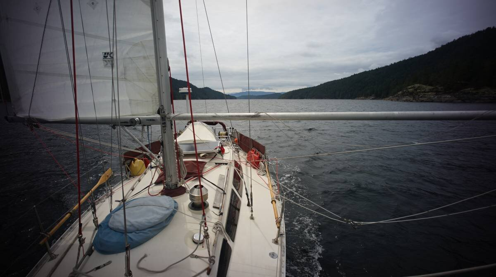

western canada

We bought Pino in North Saanich, British Columbia, Canada in 2016. We left in August 2016 to circumnavigate the Pacific Ocean. We returned to our home waters in August 2020 after our north pacific ocean crossing from Japan.
- VHF Channels
- Currents and Tides
- Currents and Tides Resources
- Wind and Weather
- Wind and Weather Resources
- Books About Anchorages
- Our Summer Sailing Routes
- Our Cruising Notes
VHF channels
Use 66A to contact marinas.
The Canadian Coast Guard (CCG) provides continuous service (monitoring, response, weather alerts) on VHF channel 16 (156.8 MHz), and on 2182 kHz MF.
WX is for weather forecasts, with forecasts broadcasted 4 times daily at 0400, 1030, 1600 and 2130. The forecasts shared at these hours are very general, and may not represent conditions accurately everywhere(in many places wind is affected by land). More accurate forecasts are broadcasted throughout the day via lighthouses, automated stations and buoys. A good example is checking the Weather Canada forecast for the North of Nanaimo waters when moored in Sturt Bay on Texada, instead of looking at local conditions at Grief Point. A SE wind is known to accelerate between the east side of Texada Island and the mainland at Grief Point, but the North of Nanaimo report will never reflect that, it is too general.
Currents and Tides

Current. The waters of the Georgia Basin are protected from the worst of the weather by Vancouver Island, it acts like a giant breakwater, but this protection comes at the cost of current. The inside passage waters are full of islands, the water, commanded by the gravitational pull of the moon and sun, must move between them, often forced through narrow openings and resulting in a marked acceleration. These waters have many rapids, many areas that will be difficult and dangerous to transit at peak flood or ebb(Current at Seymour Narrows can reach 16 knots on a large flood). When planning a sail, looking at what the current is doing will guarantee safe passage. Planning transits through rapids at slack tide is a safe tactic. Even if the waters are protected from ocean waves, crossing the Georgia Strait can get very sporty because of the current acting against the wind.
Tides. Check the high tide level when anchoring to avoid underscoping. Anywhere south of Mitlenatch Island in the Strait of Georgia, the water floods north and ebbs south as it should, but the water above that point changes direction(floods south, ebbs north) due to how long Vancouver Island is, and because of all of the islands and long fjords nestled between it and mainland BC. This reversal results in little water exchange in Desolation Sound, an area known for its warmer waters and low current.
Tide and Current Resources
- Tide and Current Tables.
Available here. Volume 5, 6 and 7 cover the entire Canadian West Coast. Released in January every year. Adjust for daylight savings time, being an hour off when transiting a rapid can be very dangerous. - Current Atlas - Juan de Fuca Strait to Strait of Georgia.
Available here. Used in conjunction with Vol.5 of the Tide and Current Tables. This book contains diagrams illustrating where to expect strong tidal streams or large eddies, as well as surface currents caused by the discharge of the Fraser River. Keep the same copy forever. - Murray's Tables/Washburne's Tables.
Use these tables to quickly determine which chart of the Current Atlas to consult. The tables aren't necessary, it's possible to calculate the data yourself, but it saves time. Released in January every year. We print and use Borsboom's Tables.
Wind and Weather
Large scale regional weather(Pacific High in the summer) determines the general wind patterns in British Columbia, but local land features can also create localized wind patterns. The many fjords and inlets populating this coast act as tunnels carrying winds to and from the coast known as inflow and outflow winds.
Summer. Daytime heat from the sun heats up the land and mountains and creates see-breezes and anabatic winds(a warm wind which blows up a steep slope/mountain) that flow from the cool water toward the warmer land as an inflow. At night in summer when the land cools by radiating energy to space, the opposite happens where katabatic winds(wind moving downward because of cooling, esp. at night) combine with land-breezes to channel colder air from the cold land to ward the water as an outflow.
Winter. Cold arctic air masses moving into the BC interior, creates strong high pressure east of the coast-range mountains. But lower pressure is often on the other side of the mountains, over the Pacific coast. The resulting pressure difference pushes air from the interior of BC through the valleys and fjords to the coastline as a very strong winter outflow wind. The leading edge of a strong outflow can bring clouds, rain, or even snow with it, followed by clear skies.
Read more about inflows and outflows in BC waters. There is really too much to say about winds on this coast, we highly recommend the book Taken by the Wind, The Northwest Coast by Marilyn Johnson to understand it in detail.
Wind and Weather Resources
- Metport
A detailed, marine-focused weather prediction portal for the Juan de Fuca Strait and for Georgia Strait, with frequently updated visualizations. - Pacific Georgia Basin. Wind and weather forecasts for the Pacific Georgia Basin.
- Pacific North Coast. Wind and weather forecasts for the Pacific North Coast.
- Pacific South Coast. Wind and weather forecasts for the Pacific South Coast.
- Taken by the Wind: The Northwest Coast by Marilyn Johnson.
Books About Anchorages
- Waggoner Guide (1 volume that covers BC, SE Alaska, and Washington).
- Dreamspeaker Series (4 volumes covering The Broughtons, Desolation Sound/Discovery Passage, Gulf Islands and Vancouver/Sunshine Coast).
- Exploring the North Coast of BC (Bluden Harbour to Dixon Entrance).
Our Summer Sailing Routes
Since 2020 we've spent our winters on the Victoria docks, and summers cruisings in the Salish Sea. Dotted lines indicate the return trip, with some overlap with the starting routes.

Summer 2021 route: Victoria > Cadboro Bay > North Saanich > Wesport Boatyard > Genoa Bay > Glenthorne Passage > Ganges(SaltSpring Island) > Montague (Galiano) > Southey Bay > Gabriola > False Creek(Vancouver) > Gabriola > Clam Bay > Montague Harbour > Lyall Harbour (Saturna Island) > North Saanich > Victoria. Note. We had engine problems that year, so we didn't cruise around too much. See engine rebuild. We also did a lot of boat projects, like installing our woodstove, our dry toilet and dealing with thruhulls.

Summer 2022 route: Victoria > Sidney > Glenthorne Passage (Prevost Island) > Montague (Galiano) > North Cove (Thetis Island) > Nanaimo > Secret Cove > Pender Harbour > sturt bay Texada Island > Grace harbour > Melanie Cove > Refuge Cove > hathayim marine park > Melanie Cove > Tenedos Bay > Sturt Bay > Bargain Bay (Setchel Peninsula > Gabriola (Silva Bay) > Montague (Galiano) > Lyall Harbour (Saturna Island) > Sidney > Montague > Sidney > Cadboro Bay > Victoria.

Summer 2023 route: Victoria > North Saanich > Glenthorne Passage (Prevost Island) > Montague (Galiano) > Glenthorne Passage > Westport Boatyard > Genoa Bay > Maple Bay > Telegraph Cove (Thetis Island) > Gabriola (Silva Bay) > Smuggler Cove (Setchel Peninsula) > Pender Harbour > Princess Louisa Inlet > Baker Bay (Hotham Sound) > Thunder Bay > Sturt Bay (Texada Island) > Roscoe Bay (West Redonda Island) > Melanie Cove > hathayim marine park > Heriot Bay > Octopus Islands > Waiatt Bay > Octopus Islands > hathayim marine park > sturt bay > Ballet Bay (Nelson Island) > Smuggler Cove > Gabriola > DeCourcey Island(SE anchorage) > Montague Harbour Galiano > Glenthorne Passage > Sidney > Oak Bay > Victoria.
Our Cruising Notes
Everytime we visit a new place, we'll update our notes here:
Gulf Islands
The Sunshine Coast
- Cathedral Grove
- Sturt Bay(Texada Island)
- Smuggler Cove
- Princess Louisa Inlet
- Ballet Bay
Desolation Sound
Discovery Islands
- Octopus Islands
- Heriot Bay
- Hathayim Marine Park(Von Donop inlet, Cortes Island)